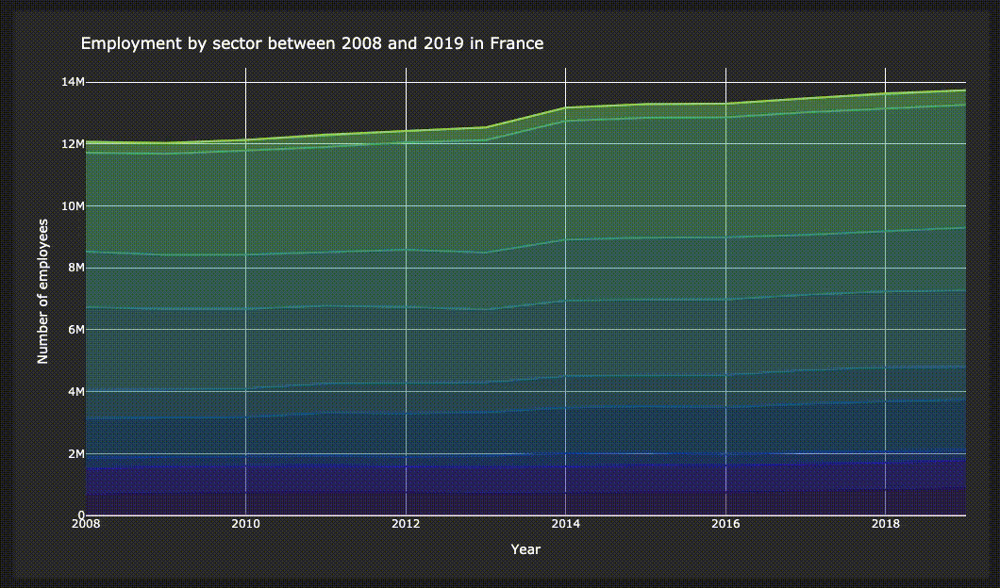

Introduction


sources: python, ESIEE Paris
{kind=link}
{kind=link}
Dans le cadre du module "Python pour la datascience" (DSIA-4101A), nous avons eu l'opportunité de créer un dashboard liant les compétences acquises grâce ce module avec notre créativité. Le projet se réalisa en binôme et l'objectif fut de fournir une représentation intéractive (dashboard) d'un jeu de données accessibles publiquement et non modifiées.
Notre responsable:
- COURIVAUD Daniel
Notre binôme est composé de:
- RAFIDINARIVO Itokiana
- FONTA Romain
Et nos jeux de données sont:
- Obesity among adults by country, 1975-2016
source: Kaggle
- Employment by activities (ISIC Rev.4)
source: OECD Stats
Problématique
Alors notre binôme s'est demandé: Existe t'il un lien entre l'obesité et les emplois bureautiques et/ou manuels?
Table des matières
I. Guide utilisateur
1. Installation & Téléchargement
A. Python (3.X.X)
Dans un premier temps, afin d'utiliser notre projet il faudra posséder Python v3.X.X sur votre appareil. Pour cela, que votre appareil soit sous Linux, macOS, Windows ou autre, rendez vous la page de téléchargement de Python en cliquant ici. Puis suivez les instructions lors de l'installation.
Après l'installation, vérifiez que Python v3.X.X est bien installé sur votre appareil en tapant les commandes suivantes sur le Terminal, Invité de commandes, PowerShell ou autre selon votre système d'exploitation:
$ python3 --version Python 3.X.X
Ou
$ python --version Python 3.X.X
Dans le cas où vous avez ce résultat:
Python 2.X.X
Alors reinstallez une version 3.X.X de Python.
B. pip/pip3
Dans un second temps, installer Python ne suffit pas. Le projet utilise différents "packages" qui ne sont pas disponibles automatiquement avec Python alors il faudra installer pip.
pip n'a pas besoin d'être installé si la version est:
- Python 2.X.X >= 2.7.9
- Python 3.X.X >= 3.4
Sinon voici un lien pour le télécharger ici.
C. Le dashboard
Télécharger le projet
Le projet est téléchargeable sur le la page suivante ici. Celui-ci pourra être utilisé comme un "Git Repository", en "forkant" le projet, ou comme un projet dossier normal, en "clonant" le projet sur votre ordinateur.
Packages nécessaires
Pour que le projet marche comme il faut, des packages supplémentaires sont nécessaires. Le nom de ces packages sont disponibles dans le fichier requirements.txt:
... dash==1.16.0 dash-bootstrap-components==0.10.6 dash-core-components==1.12.0 dash-html-components==1.1.1 dash-renderer==1.8.0 dash-table==4.10.1 decorator==4.4.2 defusedxml==0.6.0 descartes==1.1.0 entrypoints==0.3 ...
Afin de les télécharger/installer voici les commandes possibles en fonction de votre configuration:
pip install -r requirements.txt
pip3 install -r requirements.txt
python -m pip install -r requirements.txt
python3 -m pip install -r requirements.txt
2. Exécution
A. Windows
Lancez un invité de commande/cmd/powershell puis rendez-vous au niveau du dossier du projet:
- Sous CMD
> CD [Le chemin menant au dossier] > DIR ...
- Sous powershell
> cd [Le chemin menant au dossier] > ls README.md main.py data src requirements.txt
Il faudra bien-sûr remplacer le "[Le chemin menant au dossier]" par le chemin réel sur votre appareil. Si vous ne vous retrouvez pas avec un affichage a peu près similaire alors vérifiez si vous êtes bien dans le bon dossier ou non sinon jusqu'à là c'est bon.
Une fois que vous avez le même affichage, lancez une des commandes suivantes afin de lancer l'application:
B. Linux & macOS
Lancez un terminal/invité de commandes/console au niveau du projet:
$ cd [Le chemin menant au dossier] $ ls README.md main.py data src requirements.txt
Il faudra bien-sûr remplacer le "[Le chemin menant au dossier]" par le chemin réel sur votre appareil. Si vous ne vous retrouvez pas avec le même affichage alors vérifiez si vous êtes bien dans le bon dossier ou non sinon jusqu'à là c'est bon.
Une fois que vous avez le même affichage, lancez une des commandes suivantes afin de lancer l'application:
$ python3 main.py
Ou
$ python main.py
Si tout se passe bien alors vous aurez cette affichage:
$ python3 main.py Dash is running on http://127.0.0.1:8050/ * Serving Flask app "app" (lazy loading) * Environment: production WARNING: This is a development server. Do not use it in a production deployment. Use a production WSGI server instead. * Debug mode: on
3. Utilisation
Une fois éxécuté, le "dashboard" est accessible à l'adresse http://127.0.0.1:8050/.
A. Bar de navigation

Pour d'accéder aux différentes pages proposées par l'application il y a la bar de navigation (ci-dessus). L'application propose 3 pages:
- Obesity
- Employment
- Analytics
Tous sont accessibles en cliquant sur le label correspondant à la page à droite de la bar de navigation.
B. Page Obesity
Lorsque l'installation et l'éxecution ont bien été respéctés alors on se retrouve sur la page suivante:

Sur cette page, Obesity, on utilise le jeu de données Obesity among adults by country, 1975-2016.
-
Fenêtre principale

La page permet d'intéragir avec la carte du monde et l'histogramme situés du côté droit de la page à partir du "slider" situé en haut à gauche afin de défiler les années. Cela permet de voir la progression du pourcentage d'obesité sur une représentation géolocalisée et la distribution de celle-ci au cours des années.
-
Fenêtre secondaire
La fenêtre secondaire est une fenêtre sur laquelle on peut avoir plus d'information sur une région spécifique, c'est-à-dire un pays ou un continent. Celle-ci apparaît lorsque que l'on appuie sur le bouton "Submit" après avoir choisi la région ou lorsque l'on change de pays/continent. Voici deux examples:

Apparition de la fenêtre secondaire pour un pays spécifique

Apparition de la fenêtre secondaire pour un continent spécifique
Mais ducoup qu'est-ce que l'on peut faire sur cette fenêtre secondaire?
- Changer l'intervalle pour intérargir avec le graphique représentant l'évolution du pourcentage d'obésité par sex.
- Changer l'année pour intéragir avec:
- Le camembert représentant le part de personnes obèses et non obèses au sein de la région.
- Le rang de la région par rapport aux autres (ex: un pays sera comparé à tout les autres pays du monde, un continent sera comparé aux autres continents). Ce rang est définit tel que plus le rang est petit, plus faible est le pourcentage d'obésité et réciproquement plus le rang est grand, plus élevé est le pourcentage d'obésité.

Et bien sûr pour quitter la fenêtre secondaire il suffit de cliquer sur le bouton rouge "Close".
C. Page Employment
Sur cette page, Employment, on utilise le jeu de données Employment by activities (ISIC Rev.4).
-
Menu
Cet élément de la page permet de contrôler les différents graphiques présents sur la page. Ce menu permet de modifier les variables suivantes:
-
Country: Pays
-
Year range: interval temporel (années)
-
Sex: Sexe
-
Activity type: Type d'activité, bureautique ou manuel
-
Graphique: Evolution des secteurs d'activités au cours du temps

Ce graphique montre l'évolution des activités d'un secteur (bureautique ou manuel) dans un interval temporel pour un pays et un sexe donné. Chaque couche représente une activité, l'abscisse représente les années et l'ordonnée le nombre d'employés.
-
Graphique: Répartition des secteurs d'activités
Ce graphique montre la répartition des employés dans un secteur d'activités (bureautique ou manuel) au cours d'un année spécifique (controlée avec le slider situé en en dessous du graphique) pour un pays et un sex donné.
-
Graphique: Evolution des emplois bureautiques et manuels
Ce graphique montre l'évolution des deux secteurs d'activités dans un interval temporel donné. En ordonnée, on a le nombre d'employés et en abscisse les années.
D. Page Analytics

Sur cette page, Analytics, on utilise les deux jeux de données combinés en un seul et on utilisera 2 types de graphiques pour 3 types de correlation différentes.
-
Correlation par pays

-
"Carte de chaleur"

II. Guide développeur
Dans ce guide développeur la structure, le code des scripts python et le rôle des fichiers dans le projet seront expliqués.
1. Les répertoires & fichiers
Dans cette partie, on explique le rôle de chaque répertoire ainsi que les fichiers qui y appartiennent.
A. data
Ce répertoire contient l'ensemble des jeux de données utilisés pour le projet. Voici leurs utilités:
- employment.csv: Le jeu de données sur l'emploi, Employment by activities (ISIC Rev.4).
- obesity.csv: Le jeu de données sur l'obésité, Obesity among adults by country, 1975-2016.
- world-country.json: Le jeu de données contenant les délimitations de tout les pays du monde, voici la source ici.
B. images
Ce répertoire contient l'ensemble des images pour le projet, mais ces images servent principalement pour la rédaction de ce guide.
C. src
Ce répertoire continent l'ensemble du code du projet. Voici le rôle de chaque fichier:
- process_data.py: Ce script python sert pour le traitement des données afin que l'on puisse les utiliser proprement.
- navigation_bar.py: Ce script python contient le code pour la création de la bar de navigation (fonctionnalités et apparence).
- paths.py: Ce script python sert à gérer les accès aux différents fichiers du projet.
- obesity_page.py: Ce script python contient le code pour la création de la page Obesity (fonctionnalités et apparence).
- employment_page.py: Ce script python contient le code pour la création de la page Employment (fonctionnalités et apparence).
- analytics_page.py: Ce script python contient le code pour la création de la page Analytics (fonctionnalités et apparence).
-
__init__.py: Ce script python n'existe que pour que l'on puisse importer les fonctions/variables des autres scripts locaux au projet.
D. main.py
Ce script python contient le code pour:
- Exécuter l'application.
- Créer l'intéractivité entre les différents composants de la page avec les jeux de données. Donc un rôle de serveur.
E. requirements.txt
Ce fichier texte contient les noms des différents packages nécessaires à l'utilisation du projet.
Afin de le générer à nouveau si le projet a subi des modifications, il faudra taper une des commandes suivantes:
pip3 freeze > requirements.txt
pip freeze > requirements.txt
python -m pip freeze > requirements.txt
python3 -m pip freeze > requirements.txt
F. README.md
Ce fichier Markdown, que vous êtes actuellement en train de lire normalement, contient:
- Présentation du projet
- Guide utilisateur
- Guide développeur
- Rapport d'analyse
2. Le code
A. Script se terminant par [...]_page.py + navigation_bar.py
Ces scripts python sont structurés de la manière suivante:
""" Module pour [rôle du script]. """ # Import ... # Chargement des données ... # Traitement des données ... # Les fonctions ... # Les variables ...
- Les import
Dans cette section du script, on charge les packages nécessaires pour remplir la fonction du script. Dans ces scripts on a deux types d'import:
- Les import de packages:
Dans ce cas on charge les modules de bases (ex: pandas, numpy ou encore scipy) comme dans l'exemple suivant:
... # Import import dash import dash_bootstrap_components as dbc import dash_core_components as dcc import dash_html_components as html import pandas as pd ...
exemple: analytics_page.py
Ici le mot clé as permet d'utiliser un alias pour le packages.
- Les import de modules locaux
Dans ce cas on charge les modules locaux, c'est-à-dire les autres scripts au sein du projet. Par exemple dans le script analytics_page.py:
... # Import local from src.obesity_page import generate_dropdown from src.process_data import process_obesity, process_employment from src.paths import employmentPath, obesityPath ...
exemple: analytics_page.py
Ici on charge des fonctions (generate_dropdown, process_obesity, process_obesity, process_employment) et des variables (employmentPath, obesityPath) provenant des scripts obesity_page.py, process_data.py et paths.py.
- Le chargement des données
Dans cette section du script, on récupère les jeux de données nécessaires à utiliser pour le projet. Par exemple:
... # Chargement des donnees obesity = pd.read_csv(obesityPath, index_col=0) with open(countriesPath) as f: countriesGeoJson = json.load(f) ...
exemple: obesity_page.py
Ici on charge les jeux de données Obesity among adults by country, 1975-2016 et world-countries.json.
- Le traitement des données
Dans cette section du script, on traite les jeux de données à utiliser pour le projet. Par exemple:
... # Chargement des donnees obesity = pd.read_csv(obesityPath, index_col=0) ... # Traitement des donnees obesity = process_obesity(obesity) ...
exemple: obesity_page.py
Ici après avoir chargé le jeu de données, on utilise la fonction process_obesity provenant de process_data.py.
- Les fonctions
Dans cette section du script, on a la définition de toutes les fonctions. Par exemple:
... # Fonctions pour la page def graph_map_obesity(year): ... return mapObesity def graph_bar_obesity(year): ... return histogramObesity ...
exemple: obesity_page.py
- Les variables
Dans cette section du script, on a la définition de toutes les variables. Par exemple:
... # Variables pour les elements de la page minYear = obesity.year.min() maxYear = obesity.year.max() dropdown_continents = generate_dropdown(obesity, 'continent') dropdown_countries = generate_dropdown(obesity, 'country') # Selection du type de groupe radioitems = dbc.FormGroup(...) # Page pour obesite pageObesity = html.Div([...]) ...
exemple: obesity_page.py
Ici par exemple la variable pageObesity continent l'ensemble de la page Obesity c'est-à-dire (les éléments pour l'interaction et les graphiques), et les variables minYear, maxYear, dropdown_continents, dropdown_countries et radioitems sont utilisés dans pageObesity.
Pour avoir plus d'explication sur la structure de pageObesity, c'est ici.
B. Script paths.py
Ce script s'occupe de définir des variables pour le chemin des jeux de données. Celui-ci utilise le package os.
C. Script process_data.py
Ce script s'occupe du traitement des données, voici sa structure:
... # Imports ... # Fonctions complementaires ... # Fonctions principales def process_obesity(obesity): ... def process_employment(employment): ...
-
Traitement de obesity : process_obesity
- Renommage de certaines variables:
| Anciens noms | Nouveaux noms |
|---|---|
| Country | country |
| Year | year |
| Obesity (%) | obesity |
| Sex | sex |
- Extraction de réels à partir d'une chaine de caractères
La fonction extract_float(str, index) permet d'extraire un réel dans une chaîne de caractère à un indice donné. On extrait les réels dans la variable obesity anciennement Obesity (%) en sachant que les valeurs de cette variable sont des chaînes de caractères dans le format suivant:
Donc:
- Changement des valeurs pour la variable sex
| Anciennes valeurs | Nouvelles valeurs |
|---|---|
| Male | M |
| Female | F |
| Both sexes | B |
Pour faire ceci il faut juste extraire la première lettre de la valeur et prendre sa majuscule.
- Création de la variable country_code
Cette variable sert seulement pour la représentation géolocalisée de l'obésité. Afin de la créer, un package externe est nécessaire. On utilise le package pycountry_convert, précisément la fonction country_name_to_country_alpha2 qui va convertir un pays en son code alpha2 (ex: France=FR).
Afin de gérer quelques exceptions, la fonction convert_country_to_country_code a été créée.
- Création de la variable continent
On utilise alors les fonctions country_name_to_country_alpha2 et country_alpha2_to_continent_code du package pycountry_convert pour créer la variable continent voici les étapes suivies:
- Convertir le pays en code alpha2 avec country_name_to_country_alpha2 (ex: France=FR)
- Convertir le code alpha2 en continent avec country_alpha2_to_continent_code (ex: FR=Europe)
- Affecter cette valeur à la variable continent
Afin de gérer quelques exceptions, la fonction convert_country_to_continent a été créée.
-
Traitement de employment : process_employment
- Renommage de certaines variables:
| Anciens noms | Nouveaux noms |
|---|---|
| LOCATION | country_code |
| Country | country |
| Subject | subject |
| Time | year |
| Value | value |
- Changement des valeurs pour la variable sex
| Anciennes valeurs | Nouvelles valeurs |
|---|---|
| Males | M |
| Females | F |
| All persons | B |
- Changement des valeurs pour la variable value
Étant donnée que les valeurs de la variable value sont des nombres qui représentent des milliers, on multiple les valeurs de cette colonne par 1 000.
- Création de la variable continent
Comme pour obesity, on va créer la variable continent à partir de country_code et la fonction convert_country_to_continent qui a été créée à l'occasion.
III. Rapport d'analyse
1. Les données
A partir d'ici on suppose que les données on déjà été traitées, pour plus de détails ici.
A. Obesity among adults by country, 1975-2016
Ce jeu de données provient de Kaggle, une communauté regroupant des outils et des ressources pour la data science, précisément celui-ci a été modifié par l'utilisateur Aman Arora à partir des données originales se trouvant ici sur le site l'Organisation Mondiale de la Santé (OMS).
Dans ce jeu de données on retrouve le pourcentage de personnes obèses, pour les hommes/femmes/les deux, au sein d'un pays pour une année spécifique. Celui-ci est composé de 24 570 enregistrements/lignes et de 8 variables.
Voici la structure du jeu de données post-traitement:
| Variables | Type | Description |
|---|---|---|
| country | Categoriel (nominal) | Le pays |
| country_code | Categoriel (nominal) | Le code du pays en format ISO3 |
| continent | Categoriel (nominal) | Le continent, associé au country |
| year | Numérique (ratio) | L'année |
| sex | Categoriel binaire (nominal) | Le sexe, on ne prend en compte que l'homme ou la femme |
| obesity | Numérique (ratio) | L'obesité moyenne en pourcentage pour un pays et un sexe donné |
| max_obesity | Numérique (ratio) | La valeure minimale en pourcentage de l'obesité |
| min_obesity | Numérique (ratio) | La valeure maximale en pourcentage de l'obesité |
Remarques :
- On ne travaille pas avec les variables max_obesity et min_obesity, ceux-ci ont été gardées au cas où elles deviendraient utiles à autrui ultérieurement.
- La variable country_code sert pour le graphique géolocalisé, on utilise un jeu de données complémentaire afin d'obtenir les coordonnées géographiques de chaque pays.
B. Employment by activities (ISIC Rev.4)
Ce jeu de données provient de OECD (Organisation for Economic Co-operation and Development), une organisation économique intergouvernementale composée de 37 pays fondée en 1961 (Wikipedia) dans le but de stimuler la progression économique et les échanges.
Dans ce jeu de données on retrouve le nombre d'employés selon des activités économiques. Ces activités économiques sont définies par l'International Standard Industrial Classification (ISIC) Revision 4, on y retrouve les activités suivantes:
- Agriculture, forestry and fishing
- Mining and quarrying
- Manufacturing
- Electricity, gas, steam and air conditioning supply
- Water supply; sewerage, waste management and remediation activities
- Construction
- Wholesale and retail trade; repair of motor vehicles and motorcycles
- Transportation and storage
- Accommodation and food service activities
- Information and communication
- Financial and insurance activities
- Real estate activities
- Professional, scientific and technical activities
- Administrative and support service activities
- Public administration and defence; compulsory social security
- Education
- Human health and social work activities
- Arts, entertainment and recreation
- Other service activities
- Activities of households as employers; undifferentiated goods- and services-producing activities of households for own use
- Activities of extraterritorial organizations and bodies
Voici la structure du jeu de données post-traitement:
| Variables | Type | Description |
|---|---|---|
| country | Categoriel (nominal) | Le pays |
| country_code | Categoriel (nominal) | Le code du pays en format ISO3 |
| continent | Categoriel (nominal) | Le continent, associé au pays |
| sex | Categoriel binaire (nominal) | Le sexe, on ne prend en compte que l'homme ou la femme |
| year | Numérique (ratio) | L'année |
| subject | Categoriel (nominal) | L'activité économique (listées au-dessus) |
| activity | Categoriel binaire (nominal) | Le type d'emploi, soit bureautique, soit manuel |
| value | Numérique (ratio) | Le nombre d'employés dans le secteur, associé à un secteur/année/pays |
Remarques :
- La création de la variable activity a été faite manuellement à partir de la variable subject donc celle-ci reste subjective à notre binôme.
2. Observations
Maintenant analysons les jeux de données sur l'obésité et l'emploi afin de répondre à notre problématique.
A. Obesity among adults by country, 1975-2016
-
Cartographie & Distribution
| 1975 | 1996 | 2016 |
|---|---|---|
 |
 |
|
 |
 |
 |
-
On observe plusieurs choses avec ces cartes et histogrammes:
- Les pays les moins développés sont ceux qui possèdent une croissance faible même quasi nulle du pourcentage d'obesité.
- Les pays les plus développées/riches et les pays en voie de développement possèdent une croissance un peu plus élevée du pourcentage d'obésité.
- Un pays a réussi à avoir une majorité de sa population en obésité (Nauru).
-
Analyse spacio-temporelle
Selon les continents:

-
On observe plusieurs choses avec ce graphique:
- Dans chaque continent le pourcentage d'obesité au sein de la population ne fait que augmenter.
- Le continent avec me pourcentage d'obésité le plus élevé est l'Océanie.
- Le continent avec le pourcentage d'obésité le plus faible est l'Afrique.
-
Critiques:
- Le calcul du pourcentage d'obésité par continent s'est fait par le calcul des moyennes d'obésité de chaque pays du continent sans prendre en compte le coefficient de population par pays, donc les résultats ne sont pas à 100% représentatifs de la réalité.
Selon les continents et le sexe:
| Continent | Graphique |
|---|---|
| Asie |  |
| Europe |  |
| Amerique du nord |  |
| Amerique du sud | |
| Océanie |  |
-
On observe plusieurs choses avec ce graphique:
- Dans tout les continents, peut importe le sexe, la tendance pour le pourcentage de l'obésité est d'augmenter.
- Dans la majorité des continents le pourcentage de femmes obèses est toujours plus élevé que les hommes.
- L'Europe est le seul continent qui a inversé la position des courbes des hommes et des femmes. Donc à partir d'une certaine année le pourcentage d'hommes obèses est devenu plus élevé que celui des femmes obèses.
-
Critiques:
- On retouve ici le même problème que le graphique précédent puisqu'on n'utilise pas le coefficient de la population pour le calcul de la moyenne d'obésité.
-
Bilan
A partir de toutes ces observations on peut conclure que l'obésité est une maladie qui touche le monde entier cependant certains sont plus touchés que d'autres, notamment les pays riches et les plus développés à quelques exceptions près. En plus de cela, les femmes sont plus touchées que les hommes par cette maladie en général cependant on observe une transition de cette tendance en Europe. Malheureusement l'obésité peut être décrite comme une fonction croissante par rapport au temps, c'est-à-dire que le pourcentage de personnes obèses ne fait qu'augmenter.
B. Employment by activities (ISIC Rev.4)
-
Analyse spacio-temporelle
Selon le type d'activité:
- On observe plusieurs choses avec ce graphique:
- Le nombre d'employés dans les deux types d'activité augmente jusque 2018 puis en 2019 on a une petite chute (peut-être dû à la crise de la COVID-19).
- Il y a plus d'employés dans les activités manuelles que dans les activités bureautiques.
Selon le type d'activité pour un échantillon de pays:
- On observe plusieurs choses avec ce graphique:
- La majorité des pays possède plus d'employés dans le manuel que dans le bureautique.
- Certains pays ont subi une transition où le nombre d'employés en bureautique est plus élévé que dans le manuel. On remarque aussi le fait que le bureautique augmente et le manuel diminue ou se stabilise après cette transition.
Répartion des activités manuelles:
- On observe plusieurs choses avec ce graphique:
- Le commerce de gros et de détail, la réparation de véhicules automobiles et de motos représente environ un quart (25%) des activités manuelles.
- La production représente aussi environ un quart (25%) des activités manuelles.
Répartion des activités bureautiques:

-
On observe plusieurs choses avec ce graphique:
- Les activités sociales et médicales représente environ un quart (25%) des activités bureautiques.
- L'éducation représente environ un cinquième (20%) des activités bureautiques.
- L'administration et la défense publique représente environ 16% des activités bureautiques.
-
Bilan
A partir de toutes ces observations on peut conclure qu'entre 2008 et 2018, l'emploi possédait une bonne dynamique car le nombre d'employés ne faisait qu'augmenter dans cet interval. Cependant à partir de 2019 il y a un arrêt de cette dynamique que l'on suppose être la crise sanitaire de la COVID-19. Puis les métiers bureautiques commencent peu à peu à devancer les métiers manuels dans certains pays européens.
C. Comparaison des jeux de données
Nos deux jeux de données nous ont appris beaucoup de choses, cependant il serait intéressant de conclure sur notre problématique en faisant des opérations entre elles.
-
Contraintes
Malgré le fait que nos jeux de données soient chacunes assez complètes, elles ne proviennent pas de la même sources. Donc la fusion des jeux de données limites les comparaisons sur 15 164 enregistrement/lignes dont 32 pays répartis sur les années [2008;2016].
-
Correlation

- Explication du graphique:
- En abscisse, les pays
- En ordonnée, le type d'activité (Desk: Bureautique, Manual: Manuel)
- Les carrés représentent la correlation entre l'obésité et le nombre d'employés dans le type d'activité. La couleur des carrés est interprété de la manière suivante:
- Plus la couleur du carré se rapproche du bleu 🔵, donc de la valeur 1, alors correlation est positive. Cela signifie que l'obésité et le type d'activité peuvent être représentés par une fonction croissante.
- Plus la couleur du carré se rapproche du rouge 🔴, donc de la valeur -1, alors correlation est positive. Cela signifie que l'obésité et le type d'activités peuvent être représenté par une fonction décroissante.
- Par exemple pour la France:
- 🔵 Desk/Obesity en bleu implique que le pourcentage d'obesité augmente lorsque le nombre d'employés dans les bureaux augmente.
- 🔴 Manual/Obesity en rouge implique que le pourcentage d'obesité baisse lorsque le nombre d'employés travaillant manuellement augmente.
- Observations:
- Desk🔵 Manual 🔴: 14 pays (Denmark, Finland, France, Hungary, Ireland, Italy, Japan, Latvia, Lithuania, Netherlands, Poland, Portugal, Slovenia, Sweden)
- Desk🔵 Manual 🔵: 16 pays (Australia, Austria, Belgium, Chile, Colombia, Costa Rica, Estonia, Germany, Iceland, Israel, Luxembourg, Mexico, New Zealand, Norway, Switzerland, Turkey)
- Desk🔴 Manual 🔴: 2 pays (Greece, Spain)
- Hypothèses:
- Pour les pays en Desk🔵 Manual 🔴 sont les pays qui ont tendance à moins recruter dans les métiers manuels mais plus dans les métiers bureautiques.
- Pour les pays en Desk🔵 Manual 🔵 sont les pays qui recrutent dans les métiers manuels et bureautiques.
- Pour les pays en Desk🔴 Manual 🔴 sont les pays qui sont possiblement en crise.
- Bilan
En combinant nos jeux de données, on a découvert 3 groupes de pays qui présentent des comportements similaires grâce à la correlation entre l'obésité et l'emploi dans les activités manuelles/bureautiques.
3. Conclusion
En conclusion on peut dire qu'il existe un lien entre l'obésité et la croissance des emplois en bureaux. Cependant ce lien n'est pas présent pour tous les pays car cela dépendant aussi de leur situation économique, politique et/ou démographique.